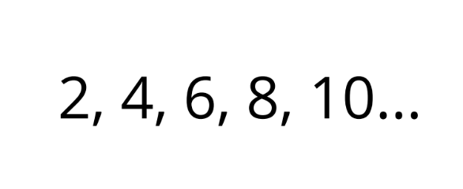
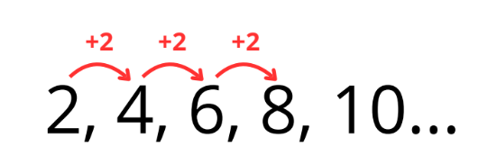
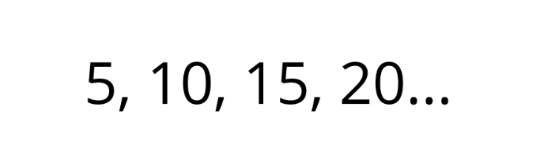
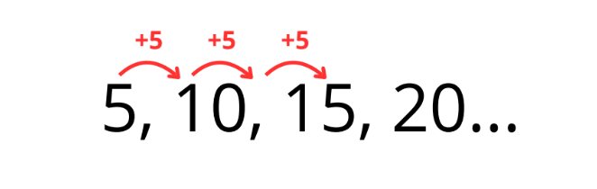
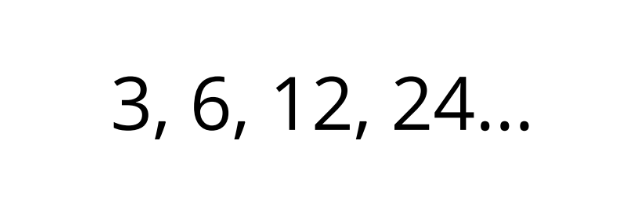

Un patrón es una regla que se repite. En matemáticas, una serie de números tiene un patrón cuando puedes descubrir qué operación o cambio se hace en un número para obtener el siguiente. Por ejemplo:
Aquí puedes ver que cada número aumenta de 2 en 2. ¡Esa es la regla! Sumar 2 cada vez.
1. Mira los primeros números:
Lee los primeros 2 o 3 números. Pregúntate: ¿Cuánto cambia de un número al siguiente? Vamos a trabajar con ese ejemplo:
De 5 a 10 hay una diferencia de 5. De 10 a 15 también hay 5. Entonces la regla es sumar 5.
2. Prueba si esa regla funciona en toda la serie:
¡Funciona! Es aquí que sabemos que ya encontramos el patrón.
A veces la regla no es sumar o restar, sino multiplicar o dividir. Aquí un ejemplo:
¿Notas algo?
La regla es: multiplicar por 2.
1. Completa la secuencia:
5, 10, 15, __, __, __
2. ¿Cuál es la regla en esta serie?
2, 4, 6, 8, 10...
3. ¿Cuál es la regla en esta serie?
11, 16, 21, 26...
4. Encuentra el número que falta:
1, 3, 5, __, 9, 11
5. ¿Cuál es el patrón en esta secuencia?
100, 90, 80, 70, ___, ___
6. Identifica la regla y el siguiente número:
3, 6, 12, 24, __
7. En un jardín se plantan 3 flores por fila. Si hay 1 fila, hay 3 flores. Si hay 2 filas, hay 6. ¿Cuántas flores habrá en 10 filas?
8. Encuentra el término que falta y la regla:
5, 11, __, 23, 29
9. ¿Cuál es la regla en esta secuencia?
2, 4, 7, 9, 12, 14, 17